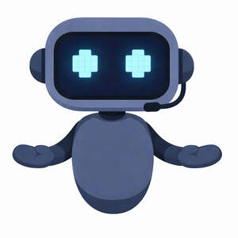

Trade Mark Journal No.2026/006 6 February 2026
UK00004325212 16 January 2026 (9,25,28,35,41,42,45)

- Class 9
- Education software; Software; Software testing software; Software reliability software; Computer software; Collaboration software platforms [software]; Computer software packages; Enterprise software; Software for computers; Computer software development tools; Software applications; Programming software; Computer software for computer aided software engineering; Downloadable computer software; Computer application software; Encryption software; Server-side software; Networking software; Computer e-commerce software; Computer software programs; Hardware testing software; Graphics software; Interface software; Telecommunications software; E-commerce software; Computer telephony software; Computer software for encryption; Downloadable software; Computer software applications, downloadable; Downloadable computer software applications; Server software; Editing software; Simulation software; Computer interface software; Computer programming software; Business software; Computer hardware for use in computer-assisted software engineering; Cryptography software; Platform software; Operating software; Accounting software; Downloadable computer security software; Computer operating software; Smartphone software; Programs (Computer -) [downloadable software]; Computer programs [downloadable software]; Software suites; Gaming software; Publishing software; Computer firewall software; Intranet software; Embedded software; Downloadable computer utility software; Security software; Computer software for advertising; Downloadable computer software for blockchain technology; Optimisation software; Hardware reliability software; Computer graphics software; Educational computer software; Music software; Mobile software; Software development tools; Computer software [programmes]; Manufacturing software; Diagramming software; Utility software; Software for smartphones; Communications software; Testing software; CAD software; Computer game software; Biometric software; Animation software; Computer software for database management; Business technology software; Downloadable software applications; Downloadable computer software for the management of data; Games software for use with video game consoles; Game programs for arcade video game machines; Video game cartridges; Video game discs; Software for arcade video game machines; Game software; Programs for arcade video game machines; Video game software; Video game cassettes; Downloadable game software; Downloadable video game software; Video games cartridges; Headsets for playing video games; Games software; Monitors for arcade video game machines; Video games software; Interactive game software; Computer game discs; Computer game software for use with on-line interactive games; Computer game cartridges; Downloadable interactive entertainment software for playing video games; Video game programs; Joysticks for use with computers, other than for video games; Downloadable video game programs; Downloadable computer games; Computer game cassettes; Electronic game software; Games cartridges for use with electronic games apparatus; Computer games; AI software; Computer video game software; Downloadable interactive entertainment software for playing computer games.
- Class 25
- Costumes for use in role-playing games.
- Class 28
- Arcade games; Game consoles; Video game consoles; Games; Handheld game consoles; Arcade video game machines; Hand-held game consoles; Arcade game machines; Games consoles; Video game apparatus, arcade games, and amusement machines ; Computer game consoles; Game cards; Tabletop games and gambling devices; Joysticks for video games; Coin-operated arcade video game machines; Game boards for trading card games; Hand-held consoles for playing video games; Joysticks being parts of video game consoles; Gamepads for video game machines; Games (Marbles for -); Video game machines; Computer game joysticks ; Card games; Joysticks for video game machines; Balls for playing boules games; Arcade video game machines with multi-terminals; Skill and action games; Action skill games; Parlour games; Mechanical games; Hockey games; Trading card games; Cards [games].
- Class 35
- Career advisory services (other than education and training advice).
- Class 41
- Education; Vocational education; Health education; Pre-school education; Education and training; Academies [education]; Education and instruction; Services of schools [education]; Education services; University education services; Education, teaching and training; Academy services (Education -); Education academy services; Academy education services; Vocational education and training services; Training and education services; Education and training services; Education and instruction services; Education examination; Educational services for providing courses of education; Provision of education courses; Career counseling [education]; Higher education services; Provision of education and training; Provision of training and education; Providing of education; Physical education; Entertainment, education and instruction services; Education academy services for teaching languages; Education services relating to vocational training; Education academy services for teaching art history; Medical education services; Education information; Information (Education -); Computer education training; Primary education services; Adult education services; Residential education courses; Linguistic education and training services; Computer education training services; Boarding school education; Education and training consultancy; Primary education services relating to literacy; Physical education instruction; Further education; Vocational education relating to home safety; Physical education services; Musical education services; Vocational education relating to self-defence; Education academy services for teaching acting; Physical health education; Legal education services; Technological education services; Providing continuing medical education courses; Online education services; Management of education services; Management education services; Education services relating to nutrition; Education services related to the arts; Education services relating to health; Singing education; Education academy services for teaching construction drafting; Providing continuing dental education courses; Education services relating to religion; Career counselling relating to education and training; Vocational education in the field of mechanics; Education courses relating to automation; Educational services provided by institutes of higher education; Club education services; Education and training in the field of music and entertainment; Vocational education relating to personal safety; Education and training services in the field of occupational health and safety; Adult education services relating to medicine; Providing continuing nursing education courses; Adult education services relating to finance; Research in the field of education; Education and training in the field of occupational health and safety; Guidance (Vocational -) [education or training advice]; Vocational guidance [education or training advice]; Education information services; Education services for imparting language teaching methods; Secondary school educational services; Sporting education services; Education services relating to medicine; Education, entertainment and sport services; Educational and teaching services; Education services relating to business training; Education courses relating to the travel industry; Education services relating to the veterinary profession; Training or education services in the field of life coaching; Providing continuing legal education courses; Career counselling [training and education advice]; Vocational education relating to first aid; Adult education services relating to law; Education in the field of computing; Blindness prevention education services; Vocational education for young people; Education, entertainment and sports; Provision of education courses relating to electronics; Education services relating to yoga; Adult education services relating to commerce; Education services relating to conservation; Education services in the nature of courses at the university level; Education in the field of occupational health and safety; Career advisory services (education or training advice); Education services relating to commerce; Provision of education courses relating to telecommunications; Adult education services relating to banking; English language education services; Education services relating to industry; Education in the field of computing science; Adult education services relating to pharmacy; Education services relating to hygiene; Provision of facilities for education; Residential education courses relating to archery; Education services relating to the cinema; Provision of education courses relating to computers; Education in movement awareness; Educational services provided by institutes of further education; Organization of education competitions; Adult education services relating to management; Education services relating to fashion; Organization of competitions [education or entertainment]; Competitions (Organization of -) [education or entertainment]; Organization of competitions for education or entertainment; Education services relating to photography; Education services relating to sports; Education services relating to banking; Education services relating to pharmacy; Education services relating to food technology; Education and training in the field of business management; Educational and training services relating to healthcare; Adult education services relating to auditing; Education services relating to conservation of the environment; Education and training in the field of automotive engineering; Foreign language education services; Providing education courses relating to the travel industry; Arcade game services; Video game arcade services; Rental of video game consoles; Rental of arcade video game machines; Poker game services.
- Class 42
- Development of computer hardware and software; Computer software integration; Computer software development; Development of computer software; Computer software consultancy; Consultancy (Computer software -); Software engineering; Computer software consulting; Software authoring; Computer hardware and software design; Software development in the framework of software publishing; Design of computer hardware and software; Computer software design; Computer software (Design of -); Design of computer software; Software design (Computer -); Computer software engineering; Software development; Development of software; Computer software installation; Computer software (Installation of -); Installation of computer software; Update of computer software; Testing of computer software; Design of software; Software design; Rental of computer hardware and software; Duplication of computer software; Development of computer database software; Installation of software; Software installation; Configuration of computer software; Design and development of computer hardware and software; Computer software (Maintenance of -); Maintenance of computer software; Computer software maintenance; Leasing of computer software; Computer software design services; Services for the design of computer software; Design of computer database software; Developing computer software; Upgrading of computer software; Software as a service [SaaS] featuring software for machine learning; Software (Updating of computer -); Updating of computer software; Computer software (Updating of -); Development of computer software application solutions; Computer software programming services; Hiring of computer software; Computer software research; Design and development of antivirus software; Video game software development.
- Class 45
- Computer software licensing; Licensing of computer software; Licensing of software; Software licensing.
YUSUF BEN-TARIFITE